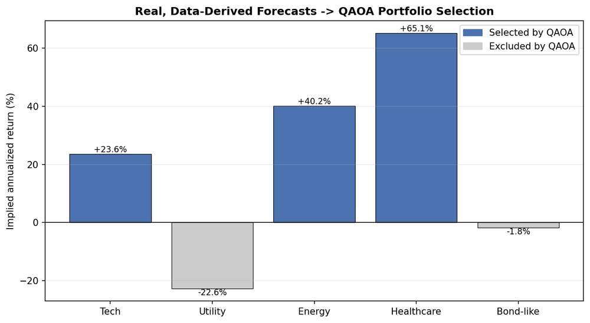
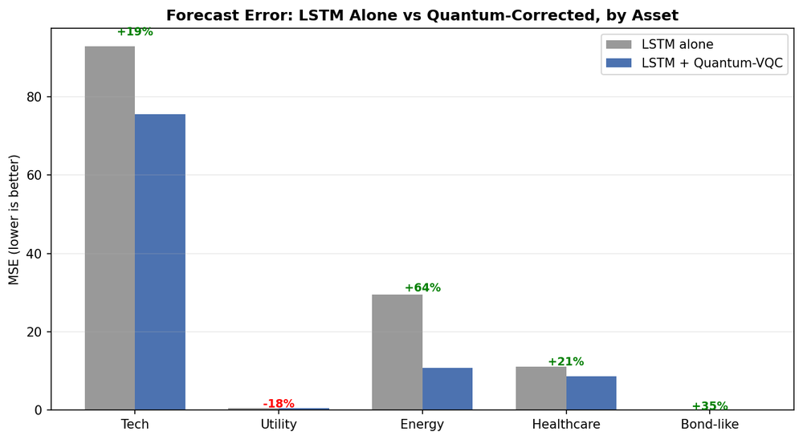
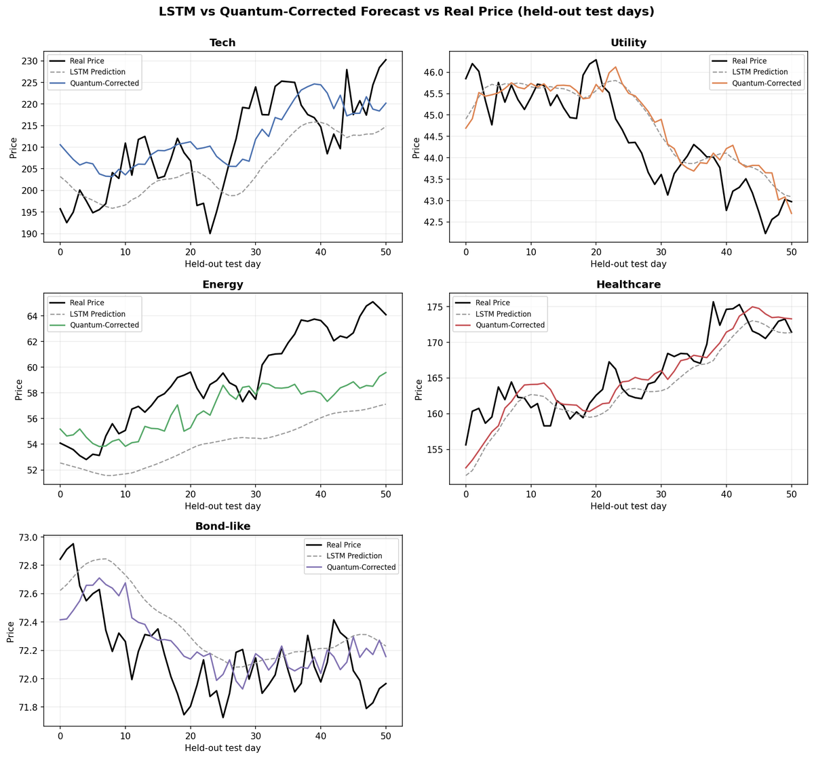
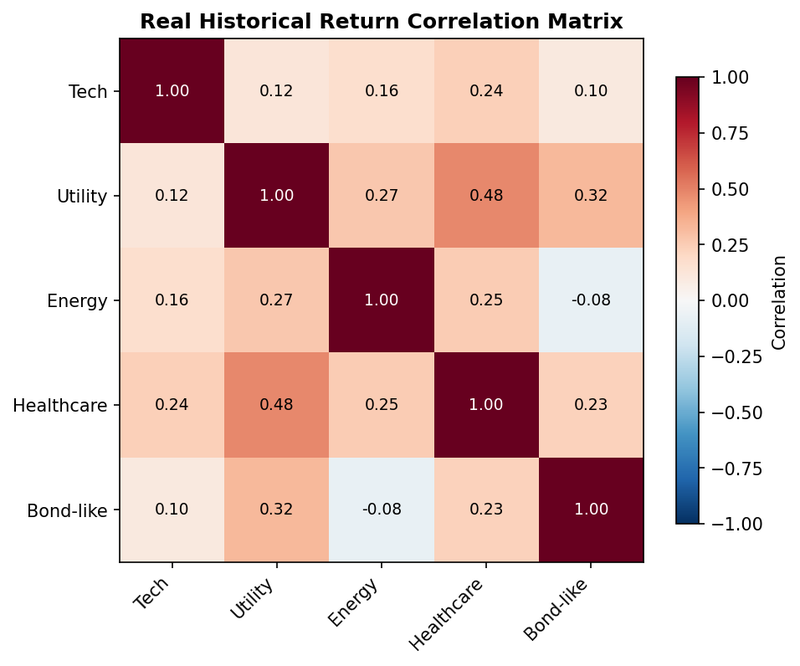

Data Engineering Associate
Reviture
Used PySpark and SQL to clean and standardize healthcare patient intake data at scale, then built Power BI dashboards for a client stakeholder presentation.
Quantitative economics and computer science, applied to messy real-world data and the businesses that run on it.
about
I came into college wanting to build software, and left more interested in what the data underneath a business actually says. My double major in Quantitative Economics and Computer Science at St. Olaf sits right at that intersection — enough engineering to build the pipeline, enough economics to know what question it should answer.
In practice that's meant cleaning healthcare data at scale, building dashboards non-technical stakeholders actually use, and sitting across the table from a small business owner to figure out which lever in their operation is worth pulling first. I like the parts of both worlds that don't get taught in a single course.
experience
Used PySpark and SQL to clean and standardize healthcare patient intake data at scale, then built Power BI dashboards for a client stakeholder presentation.
Run discovery and data analysis engagements for local small businesses — mapping the full operation, then identifying the highest-leverage place to focus, from production costs to marketing spend to sourcing.
Processed and analyzed employee and parent feedback survey data for the district, turning open-ended and structured responses into findings leadership could act on.
projects
A two-stage pipeline spanning both halves of quantum finance. A trainable Qiskit variational quantum circuit (VQC) corrects an LSTM's forecasting error on real market data for five assets; a QAOA-based optimizer then solves a Markowitz QUBO to decide which of those assets to actually hold — with the forecasts feeding the allocation decision directly, not sitting next to it.
github.com/laxoune/Quantum-trading →



study
skills
contact